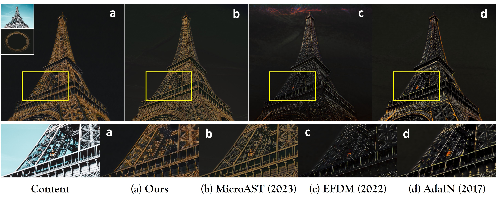
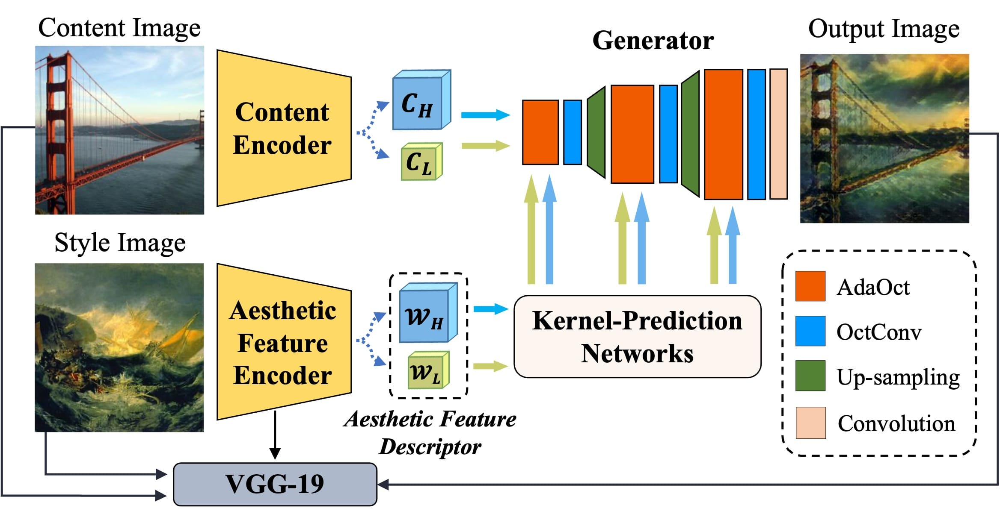
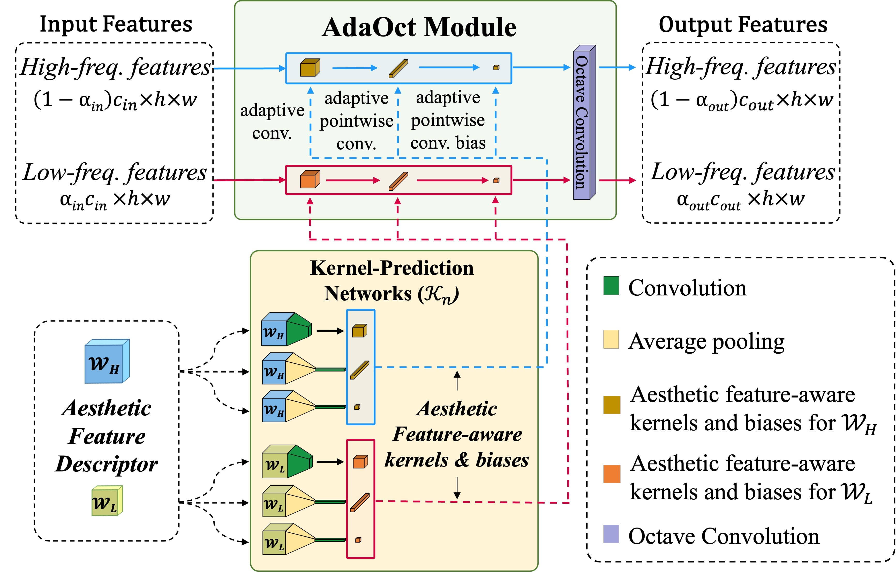
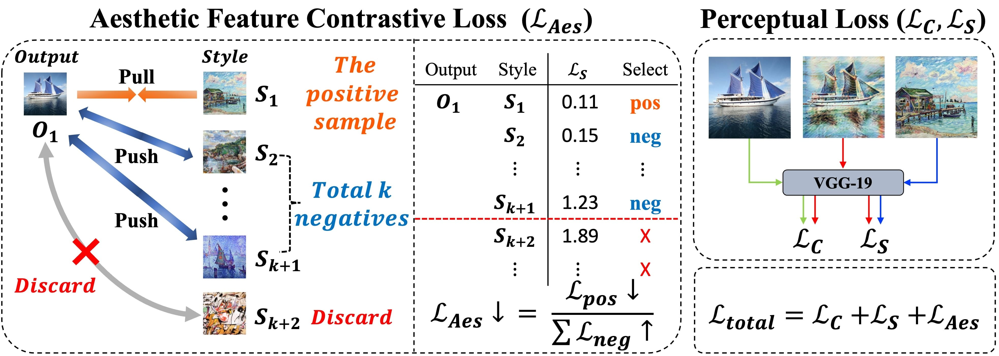
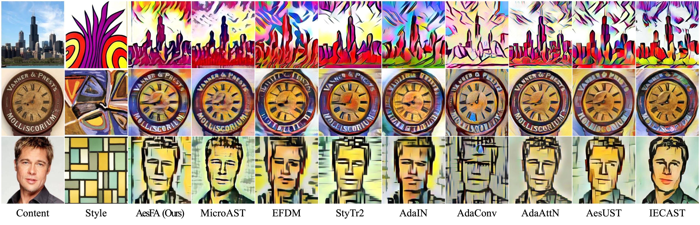
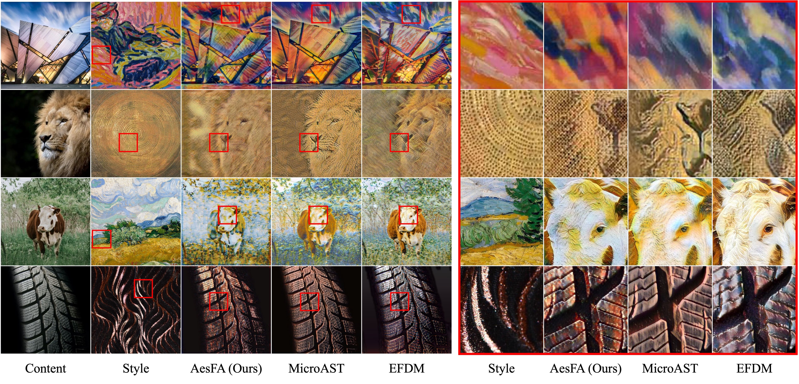
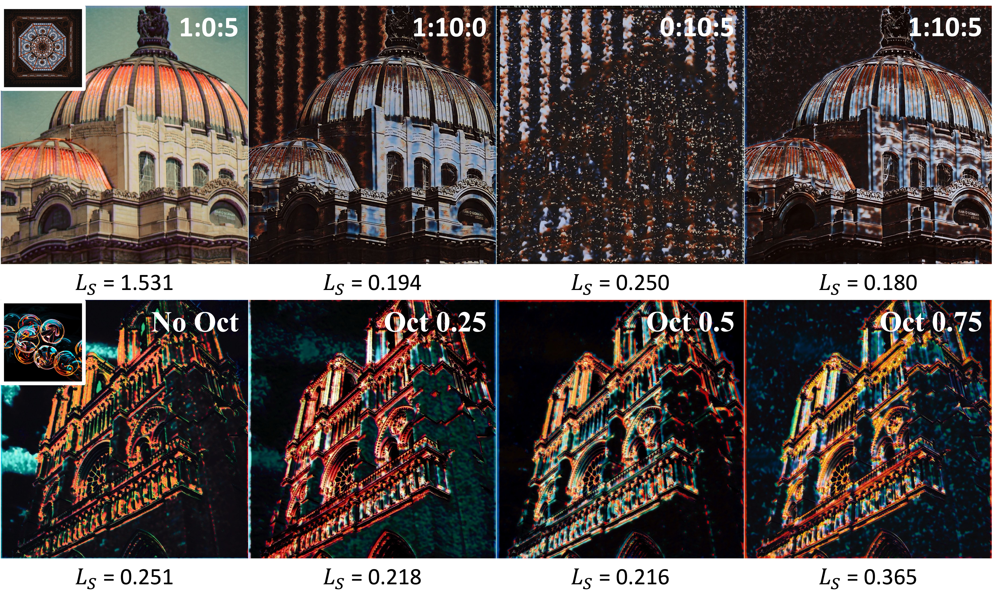
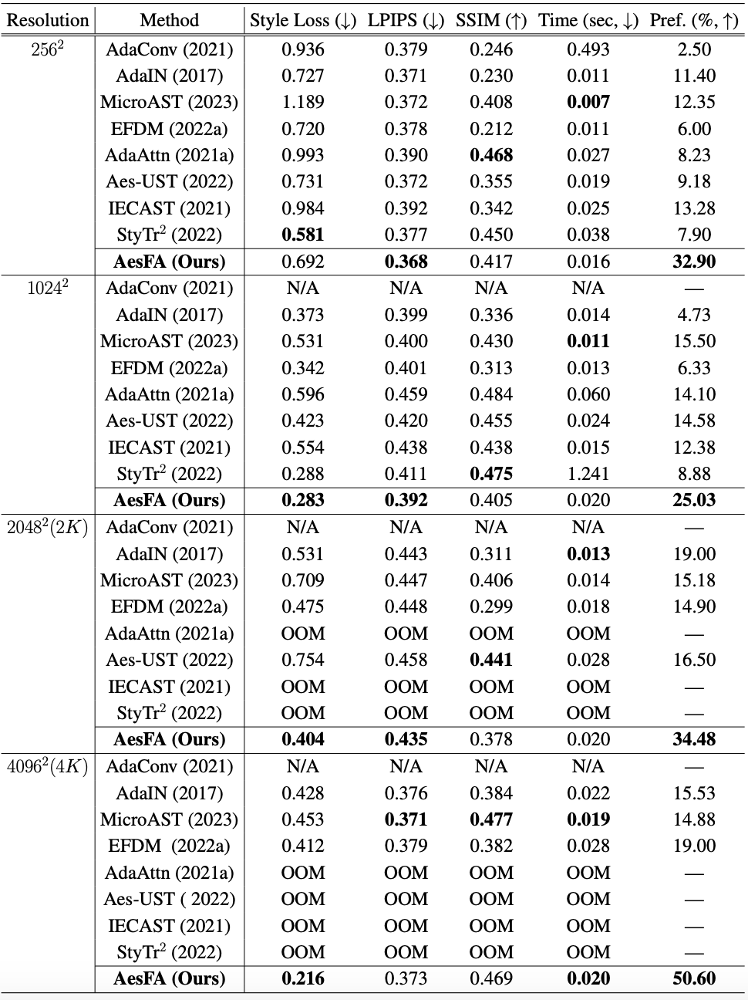
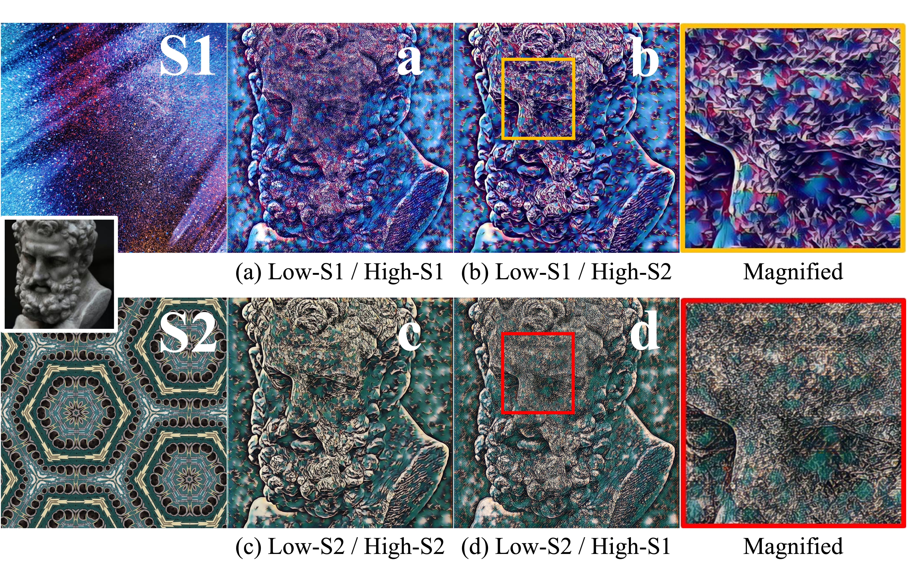
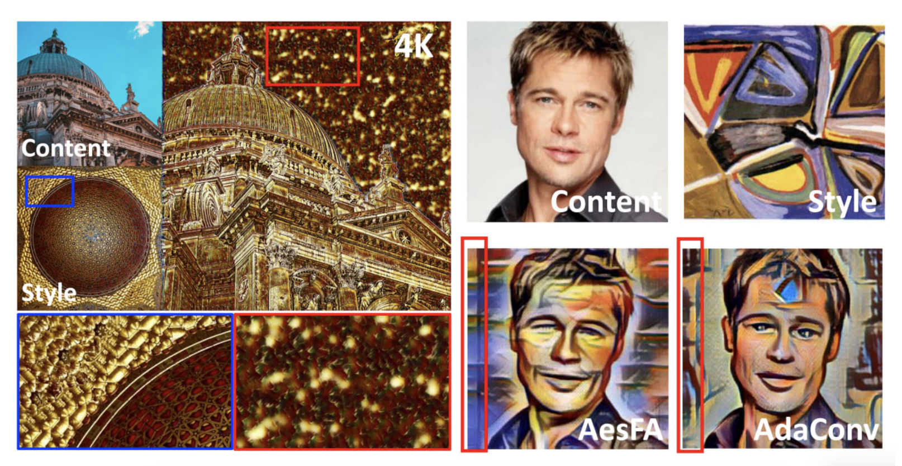

AesFA: An Aesthetic Feature-Aware Arbitrary Neural Style Transfer
AAAI2024
- Joonwoo Kwon 1*
- Sooyoung Kim 1*
- Yuewei Lin 2†
- Shinjae Yoo 2†
- Jiook Cha 1†
- 1Seoul National University
- 2Brookhaven National Laboratory
- *Equal contribution †Co-corresponding authors


Overview


- Style representations are highly correlated to spatial information.
- Existing methods heavily rely on pre-trained networks.
- We propose a lightweight yet effective model for aesthetic feature extraction and stylization.
- This framework introduces a new module for stylization and straightforward contrastive learning, while completely excluding pre-trained networks at inference.
- Our approach achieves SOTA results regardless of resolutions (256 to 4K) while achieving faster inference.
<Main Contributions>
Motivation 1 : Style representations are highly correlated to spatial information
Neural Style Transfer (NST) is an artistic application that transfers the style of one image to another while preserving the original content. Despite the recent advancement, a significant chasm persists between authentic artwork and synthesized stylizations. 1. Existing NST methods struggle to capture essential aesthetic features, such as tones, brushstrokes, textures, grains and the local structure from style images, leading to discordant colors and irrelevant patterns. Ideally, the goal of using NST is to extract a style from the image and tansfer it to content, necessitating representations that capture both image semantics and stylistic changes. This work focuses on defining these style representations. 2. In the context of painting, style representations are dfined by attributes, such as overall color and/or the local structure of brushstrokes. Most NST algorithms define style representations as spatially agnostic features to encode this information, such as summary statistics. Thus, they lack spatial information representation. 3. In fact, style representations are highly correlated to spatial information. For example, Vincent van Gogh's The Starry Night has expressionistic yellow stars and a moon that dominate the upper center and right, while dynamic swirls fill the center of the sky. In pondering the style of this painting, its focal point primarily resides in the sky rather than the village or cypress tress. Therefore, when transferring The Starry Night's style, the expected style output likely would be the dynamic swirls and expressionistic yellow stars in the sky. From this point of view, spatial information keenly matters in style representations. However, most NST algorithms fail to recognize such distinct spatial styles due to their spatial-independent style representations, leading to stylizations lacking in spatial coherence.
Motivation 2: Are all negative samples necessary?
Another challenge for NST is its heavy reliance on pre-trained networks, e.g., VGG (Simonyan and Zisereman 2014), for feature extraction. However, using such networks during inference is inefficient because of the computational demands from fully connected layers. This limits NST's use at high resolutions (e.g., 2K; 4K) and in mobile or real-time scenarios. To mitigate, a prior study (Wang et al. 2023) adopted contrastive learning for end-to-end training while excluding pretrained convolutional neural networks (CNNs) at inference. However, this approach is computationally expensive and inefficient as it uses all negative samples in a mini-batch, especially with higher-resolution samples. This prompts a question: are all negative samples necessary? Intuitively, the more distant negative samples contribute less to training as they are already well discriminated from the positive sample and vice versa.
Methods 1 : Overall Architecture

- To enhance stylization, we propose a lightweight yet effective model that we call, Aesthetic Feature-Aware Arbitrary NST, or AesFA.
- AesFA overcomes prior NST limitations by encoding style representations while retaining spatial details.
- To expedite the extraction of aesthetic features, we decompose the image into two discrete complementary components, i.e., the hihg- and low-frequency parts.
- High frequency captures details including textures, grains, and brushstrokes, while low frequency encodes global structures and tones.
Methods 2 : Aesthetic Feature-Aware Stylization

- To effectively infuse frequency-decomposed content features with aesthetic features, a new stylization module, AdaOct, is proposed that yields more satisfying stylizations with sophisticated aesthetic characteristics.
- The active interactions between two frequencies that occur in OctConv could further enhance aesthetic stylization while reducing the total computational redundancy and unwated artifacts.
Methods 3 : Aesthetic Feature Contrastive Learning

- Inspired by hard negative mining, we redefine "negative" samples as the k-th nearest negative samples to the stylized output, introducing efficient contrastive learnign for aesthetic featues via pre-trained VGG network.
Implementation Details
- To train our model, we use the COCO dataset as content images and the WikiArt dataset as style images.
- All experiments were conducted using the PyTorch framework on a single NVIDIA A100 (40G) GPU.
- We validated our model against eight state-of-the-art NST approaches.
- For fair comparisons, all existing algorithms are re-trained using same datasets with the respective author-released codes and default configurations.
- More details are outlined in the main paper and the supplementary materials.
Experimental Results




- AesFA outperforms eight state-of-the-art NST techniques both qualitatively and quantitatively regardless of resolutions, especially in terms of aesthetics while maintaining the essential content semantics.
- Compared to the other techniques, AesFA accomplishes the highest or at least comparable score along all evaluation metrics regardless of image spatial resolution, rendering a single image in less than 0.02 seconds.
- More details including ablation studies are elaborated in the main paper.
Style Blending

- Spatial control is also conveted by users who wish to modify an image by applying different styles to various regions of the image. We explored finer aesthetic style control by encoding style images into various frequencies, enabling users to blend content and style without additional resources.
- For example, Figure above shows the style blending, i.e., using the low-frequency and high-frequency style information from different images.
- The style-transferred outputs finely keep the color information from the low-frequency image and change the texture information based on the high frequency image.
- This could also be successfully adapted to the video style transfer and is well described in supplementary materials.
Video Style Transfer
Left: Content Video. Right: Stylized Output by AesFA in 2K (2048) resolution.

- AesFA achieves stylized output in less than 0.02 seconds; that is, our model processes 50 frames per second regardless of resolution and is suitable for real-time ultra-high resolution rendering (4K) applications.
- Our results can yield the best video results in terms of high consistency and aesthetic features (e.g., colors and textures).
Limitations
Despite its impressive performance, AesFA has ceratin limitations.
- The results by AesFA are sensitive to the weighting hyper-parameters for each loss, often resulting in over-stylized output (e.g., the repetitive intense style patterns on the backgrounds). This could be mitigated by carefully adjusting the weighting hyper-parameters.
- The vertical line-shape artifacts alongside the images are often observed. We reason that these appear because the content features are being convolved directly with the predicted aesthetic feature-aware kernels and biases in our model. In addition, the upsampling operation could be the ones that create artifacts.
BibTeX
If you find our data or project useful in your research, please cite:
@article{kwon2023aesfa,
title={AesFA: An Aesthetic Feature-Aware Arbitrary Neural Style Transfer},
author={Kwon, Joonwoo and Kim, Sooyoung and Lin, Yuewei and Yoo, Shinjae and Cha, Jiook},
journal={arXiv preprint arXiv:2312.05928},
year={2023}
}